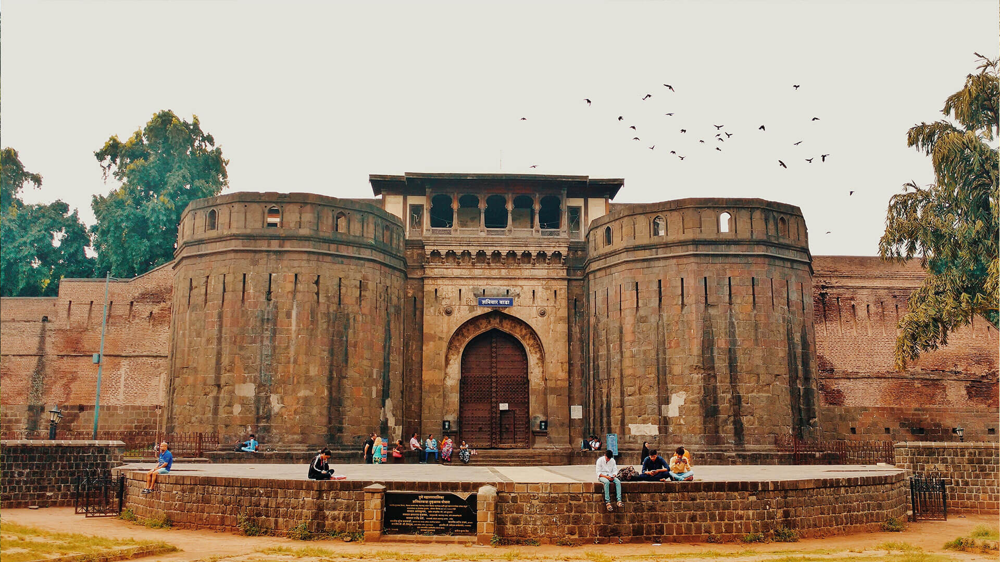
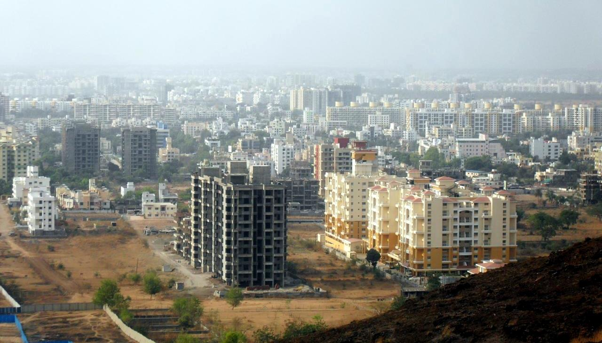

Pune : My Favorite City
Pune is a sprawling city in the western Indian state of Maharashtra. It was once the base of the Peshwas (prime ministers) of the Maratha Empire, which lasted from 1674 to 1818. It's known for the grand Aga Khan Palace, built in 1892 and now a memorial to Mahatma Gandhi, whose ashes are preserved in the garden. The 8th-century Pataleshwar Cave Temple is dedicated to the Hindu god Shiva.
Pune, also known as Poona is a city in the Indian State of Maharashtra and the eighth most populous city in India, with an estimated population of about 7.4 million as of 2020.[24] It has been ranked as one of the most livable cities in India several times.
Peth is a general term in the Marathi language for a locality in Pune. Seventeen peths are located in Pune, which today constitute the old city of Pune. Most were established during the Maratha empire era under the Maratha and Peshwa rule of the city in the 18th century, before the arrival of the British.[98] Seven of them are named after the days of the week in Marathi, and the day of the week on which traders and craftsmen in these peths mainly conducted business corresponded to the day after which each is named. Other peths are named after their respective founders. Pune includes seventeen peths: Ghorpade Peth, Somwar Peth, Mangalwar Peth, Budhwar Peth, Guruwar Peth, Shukrawar Peth, Shaniwar Peth, Raviwar Peth, Kasba Peth, Bhawani Peth, Ganj Peth, Nana Peth, Ganesh Peth, Sadashiv Peth, Narayan Peth, Rasta Peth, Navi Peth.